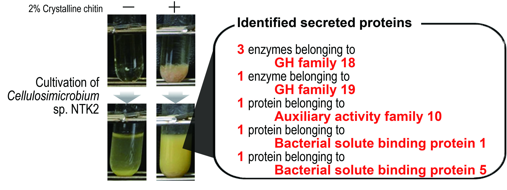

Microorganisms, especially bacteria, are organisms so small that they are invisible to the eye. Because they are invisible, it is difficult to confirm whether they really exist just by looking at. However, the invention of the microscope by Dr. Löwenhoek (1665) greatly advanced the world of microscopic science, proving that microorganisms exist in almost all spaces. So why are 99% of bacteria still unknown!? There are two reasons for this. One is that there are too many species to cover. Currently, the existence of microorganisms is being covered by environmental genome analysis. However, even if the existence of microorganisms is known, it takes a great deal of time, effort, and cost to catch the desired microorganisms. The second is that more than 99% of the bacteria in the world cannot be cultured. The reasons why they cannot be cultured are that they are sleeping, live but do not increase in number, grow very slowly, or require symbiosis with certain microorganisms. These are the reasons why they are unknown. Improvements in analytical techniques due to advances in biotechnology/electrotechnology are behind the discovery of these facts. In particular, the development of next-generation sequencers has made it possible to acquire large amounts of various genetic information at once. As a result, it is now possible to determine what microorganisms are present in the environment and in what ratios they exist. Researchers then try to target the microorganisms present in the environment and develop them into fermentation research. However, a lot of information and techniques are lacking to acquire the desired microorganisms, cultivate them, and have them create things. In addition, wet experiments such as cultivation and cultivation are indispensable to obtain evidence. With this background, my laboratory is developing the following research.
●Ecological Analysis of Crab Shell Soil and Acquisition of Useful Actinomycetes for Effective Utilization of Unused Marine Resources
It is our responsibility to transition from the use of fossil fuels to a society that makes full use of biological resources. On the other hand, research and development to utilize unutilized biological resources is also being conducted worldwide. Based on this background, Tottori University established the "Research Center for Utilization of Unutilized Living Resources" with the goal of realizing the SDGs related to marine resources through the utilization of unutilized living marine resources in Tottori Prefecture, one of the leading fisheries prefectures in Japan. In this center, we aim to develop attractive ways to utilize unutilized marine biological resources through evaluation of their functions and physical properties, using waste parts of seaweeds and seafood as subjects. In this context, I am conducting research on the utilization of unutilized chitin resources using genetic resources and enzymes of the crab shell soil ecosystem to improve the usability of unutilized chitin resources such as crab shells. A few examples of this research are shown below.
1. Functional analysis and application of Cellulosimicrobium sp. NTK2, an actinomycete that highly degrades chitin
Cellulosimicrobium sp. NTK2 (strain NTK2) is an actinomycete isolated from crab shell compost in 2015 as a chitin degrading bacterium. Although it is an actinomycete, the NTK2 strain does not form mycelium. Genus Cellulosimicrobium were known to be found mainly in decaying wood. On the other hand, the NTK2 strain may have been living in crab shells because it degrades chitin to a high extent. Such properties of strain NTK2 are expected to be utilized in the production of useful substances from the underutilized resource chitin in the future. The whole genome sequence of strain NTK2 was sequenced in 2018 and found to have eight chitinases and two lytic polysaccharide monooxygenases in its genome. Therefore, the NTK2 strain is thought to efficiently degrade crab shells by secreting many types of chitinolytic proteins. However, the degradation of crystalline chitin cannot be achieved by the reaction with culture supernatant of NTK2 strain. Recently it was discovered that the presence and vital activity of NTK2 strain cells are essential for the degradation of crystalline chitin. Understanding the mechanism of chitin degradation by the presence of NTK2 strain cells and genetic disruption of Solute Binding Protein (SBP), a protein secreted by NTK2 strain for disaccharide absorption, will directly lead to the production of useful substances from chitin in the future. In this research, we are challenging metabolic analysis and genetic disruption of NTK2 strain in order to realize effective utilization of chitin, an unutilized resource, by NTK2 strain. Our research is then focused on the conversion of substances from chitin using the resulting genetically disrupted strains.

Fig. 1-1 Effect of chitin on culture of NTK2 strain and secretion of chitin-degrading proteins.
Fig. 1-2 The biological activity of NTK2 strains is essential for the degradation of chitin, and the role of SBP in this biological activity
2. Functional analysis and application of Streptomyces thermolineatus JCM6307 (6307 strain), a moderately thermophilic actinomycete that highly degrades chitin.
Strain 6307 was selected as a chitinolytic actinomycete to expand the repertoire following the NTK2 strain. The 6307 strain is an actinomycete of the genus Streptomyces, but differs from other Streptomyces strains in that it can be cultured at 37°C or 45°C. Strain 6307, similar to strain NTK2, degrades chitin to a high degree, and is expected to be utilized in the production of useful substances from the underutilized resource chitin in the future. The genome of strain 6307 was analyzed in 2023, and found to possess six chitinase and two lytic polysaccharide monooxygenase genes. The expression patterns of various chitinolytic proteins differ in the presence of chitin, chitosan, and chitin nanofibers. Thus, the role assignment is of interest. Currently, we are constructing expression systems for the chitin-degrading proteins from 6307 strain in Streptomyces and Escherichia coli. Our future goal is to realize effective utilization of the unused resource chitin by these proteins。

Fig. 2-1 Characteristics of Streptomyces thermolineatus 6307 strain
3. Ecosystem analysis of crab shell soils and acquisition of useful soil microorganisms
Crab shells are considered an underutilized resource. On the other hand, in horticulture and crop production, several farmers use crab shells in the soil to enhance disease control and improve productivity. There are believed to be many factors that contribute to this effect. One of the reasons for this is the growth of actinomycetes in the soil, which use the chitin in crab shells as a nutrient. Enzymes, antibiotics, and phytohormone-like substances secreted by the actinomycetes as they grow are thought to enhance disease control and improve productivity. However, these effects are only considered and have not been proven backed by science. Therefore, in order to obtain evidence and evaluate their usefulness, we have actually prepared crab shells and chitin soils for ecosystem analysis. The goal of this study was to acquire actinomycetes from crab shell/chitin soils and clarify the linkage between genomic information, secreted proteins, secondary metabolites, and bioactivity. We plan to verify the effects of the resulting secretions of actinomycetes on phytopathogenic fungi and crops to support the scientific basis of the crab shell ploughing method. Although there will be some gambling involved, the information obtained will lead to the production of substances from chitin, an underutilized resource such as crab shells, using recombinant technology and its application in agriculture and other fields. We will keep a close watch on the progress of this research.
Fig. 3-1 Outline of this project
Fig. 3-2 Crop cultivation in chitin and crab shell soils
●Development of microorganism technology specialized for application to Japanese cultural coldwater fish breeding, such as Ginzake, Ayu, Nijimasu, Yamame, and Iwana
Tottori is a prefecture that promotes aquaculture, and silver salmon raised with marine aquaculture techniques in Sakaiminato are recognized as the "Sakaiminato Salmon" brand. Sakaiminato salmon fry are raised in the "running water method" using low-temperature river water. Therefore, aquaculture is limited to locations that can supply water of about 15°C with good water quality. In addition, transferring grown silver salmon to aquaculture at sea involves significant transportation costs and very high risks to the organisms. Therefore, an approach to apply closed-cycle land-based aquaculture, which is highly productive and location-independent, to the cultivation of silver salmon fry was initiated in 2018. However, in closed aquaculture at low temperatures, the ability of bacteria to nitrify ammonia was extremely low. As a result, rapid accumulation of extremely toxic ammonia was observed. Therefore, to solve the problem of ammonia accumulation at low temperatures, we assembled our own system of enrichment culture for growing ammonia-oxidizing bacteria (Fig. 4-1). Then, after repeated enrichment culture at low temperatures, we obtained a bacterial flora that is capable of removing ammonia at low temperatures in one day. This project is examining how this bacterial flora can be used effectively and in what situations it is needed. Below is an example of this study.

Fig. 4-1 Closed-type circulating culture system for the construction of low-temperature ammonia-oxidizing bacterial flora
1. Construction of stream-mimicking aquaponics using low-temperature nitrifying bacterial community
Aquaponics is a next-generation recycling-based agriculture that combines hydroponics and fish farming, contributing to food production with efficient use of land and water resources. The mechanism involves the decomposition of fish waste and food scraps by microorganisms, and the hydroponic crops absorb the decomposed materials. As a result, crops and fish grow with the cleaning of fish rearing water. However, the situation is completely different in the rearing of silver salmon fry and other fish that require a low-temperature environment. Aquaponics requires advanced removal of ammonia (lethal: ~1 ppm) from waste products. However, in low-temperature environments, the nitrification capacity of microorganisms is extremely low, causing an accumulation of ammonia in aquaculture farms and leading to the death of reared fish. We have assembled a unique enrichment cultivation system and succeeded in obtaining a bacterial community capable of removing ammonia at low temperatures. This research aims to solve the problems of aquaponics at low temperatures by using bacterial community that can nitrify at low temperatures to construct a novel low-temperature aquaponics system. The aquaponics ecosystem is very complex because it involves microorganisms, plants, and fish, and the construction of a well-balanced ecosystem in a low-temperature environment is a great challenge. We believe that the realization of aquaponics in this low-temperature environment will enable the cultivation of silver salmon and mountain stream fish. Other possibilities include contributing to food production through efficient use of land and water resources in cold regions where agriculture stagnates during the winter season.
Fig. 4-2 After acquiring microorganisms that oxidize and decompose "ammonia," which is highly poisonous to fish, at low temperatures, the microorganisms were applied to a medaka fish aquarium
Fig. 4-3 Industries and problem solving derived from closed-recirculating land-based aquaculture aquaponics technology that mimics a mountain stream.
Unlike plants and animals, most cultures of microorganisms are completed in a short period of time, from one day to one week. Therefore, research on microorganisms is unique in that information can be acquired relatively quickly. On the other hand, sterile operations such as safety cabinets, autoclaves, and filter sterilization are required. Therefore, we make it mandatory to acquire the techniques before starting the research. In addition, some bacteria are delicate, and if the culture conditions are changed even slightly, they may take on a completely different appearance. Capturing their characteristics is also an important part of microbiological research.
Points to keep in mind
・How to fit the cultivation time with one's life?
・What conditions change with each cultivation?
・What items do one observe change when conditions are changed?

In addition to the above research, the Arima Laboratory also conducts research to understand protein and enzyme functions through functional and structural analysis, and to add value to various substances derived from enzyme and microbial functions. In our research on the search for useful microorganisms, we aim to conduct glocal research that combines issues specific to the fisheries industry and themes of global thinking to meet the demands of Tottori Prefecture.

The goal of protein chemistry research is to analyze the structure of the enzymes, and to reconstitute into enzymes with superior functionality. So far, we have conducted research on the conversion of peptidases to peptide ligases and on the strengthening of chitin bonds in chitin-degrading enzymes.

We are searching for new functions in unused resources and enzyme reaction products. The target of unutilized resources is Tottori Prefecture fishery waste. On the other hand, the structure of enzyme reaction products is predictable, leading to the discovery of new functions for known substances.